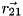
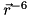
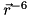
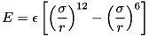
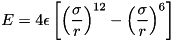
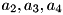
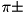
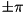
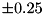

|
ForceManII
0.1
MM for QM People
|
Assume that atom 1 is bonded to atom 2; atom 2 is bonded to atom3, and atom 3 is bonded to atom 4. If we look down the 2-3 bond the 1-2 and 2-3 bonds will make an angle. This angle is the torsion angle. Mathematically this can be viewed as the angle between plane comprised of atoms 1,2, and 3 and the plane comprised of the atoms 2,3,4. Let  be a vector parallel to the 1-2 bond pointing from atom 2 to atom 1,  be a vector parallel to the 2-3 bond pointing from atom 2 to atom 3, and
be a vector parallel to the 2-3 bond pointing from atom 2 to atom 3, and  be a vector parallel to the 3-4 bond pointing from atom 3 to atom 4.
be a vector parallel to the 3-4 bond pointing from atom 3 to atom 4.  is a vector normal to the plane containing atoms 1, 2, and 3 and
is a vector normal to the plane containing atoms 1, 2, and 3 and  is a vector normal to the plane containing atoms 2, 3, and 4. The dihedral angle,
is a vector normal to the plane containing atoms 2, 3, and 4. The dihedral angle,  is then given by:
is then given by:
![\[ \cos\theta=\frac{\vec{n_1}\cdot\vec{n_2}}{n_1 n_2}. \]](form_91.png)
Alternatively:
![\[ \vec{n_1}\times\vec{n_2}=\frac{n_1 n_2\sin\theta \vec{n_3}}{n_3} \]](form_92.png)
where  is a unit vector perpindicular to
is a unit vector perpindicular to  and and with direction consistent with the right-hand rule. Since, both of our cross products involved , we know that . Given that is a unit vector we may multiply both sides of the previous equation from the right by it to get:
and and with direction consistent with the right-hand rule. Since, both of our cross products involved , we know that . Given that is a unit vector we may multiply both sides of the previous equation from the right by it to get:

Using the fact that  we also have
we also have
![\[ \tan\theta=\frac{\left(\vec{n_1}\times\vec{n_2}\right)\cdot\vec{r_{23}}} {r_{23}} \]](form_99.png)
As far as symmetries of the torsion angle are concerned, we have one degree of freedom, we can read the sequence forward or backward. Presently, we choose to read the sequence in which ever manner makes atoms 2 and atoms 3 show up in number order (order in input). Parameters for torsions are expected to be given in an analogous manner (atom type 2 should be less then atom type 3).
Related to the torsion angle, the improper torsion angle measures the planarity around an sp  hybridized atom. Instead of being a non-branching path i.e. 1 is connected to 2, which is connected to 3, which is connected to 4, the atoms in an improper torsion are all bonded to atom 2. It should be noted that there are other conventions for which atom the central atom is (usually that it is atom 3), but we choose it to be atom 2 as this is naturally where it falls when looping over connectivity.
hybridized atom. Instead of being a non-branching path i.e. 1 is connected to 2, which is connected to 3, which is connected to 4, the atoms in an improper torsion are all bonded to atom 2. It should be noted that there are other conventions for which atom the central atom is (usually that it is atom 3), but we choose it to be atom 2 as this is naturally where it falls when looping over connectivity.
It is also worth noting a few properties of the improper dihedral angle. Assume for a quadruple of atoms $ a_1,a_2,a_3,a_4$, we always compute our dihedral angle as the angle between the planes formed from the first three atoms, , and the last three atoms, . To make this more concrete consider the following example. Our atoms are located at: ~~~ a1 -43.602241118157544, -24.33802667670957, 1.848596102849415 a2 -41.92308162693384, -25.865577231287773, 0.23207724870909 a3 -42.76485062010395, -26.397217623225124, -1.864641766222014 a4 -39.789193591525105, -26.335512400506307, 1.1409900959943542 ~~~
By considering all six permutations of the orbital atoms we generate the following improper torsional angles:
| Permuation | Angle Value (radians) | |---------—|--------------------—| | 1,2,3,4 | -3.0739165910027615 | | 3,2,1,4 | 3.0833170468335953 | | 3,2,4,1 | 3.0739165910027615 | | 1,2,4,3 | -3.0833170468335958 | | 4,2,1,3 | 3.073975669189943 | | 4,2,3,1 | -3.073975669189943 |
As you can see (up to a sign) there are three unique angles that can be generated by permuting the definitions of what atom is 1, 3, and 4. By only considering cyclic permutations one can always ensure an angle with the same sign. To make matters worse, after a long search, from what I can tell, the best attempt at ensuring one always uses the same improper torsion is given on this website. Basically they suggest that the order of the orbtial atoms is that of their input to the program and the central atom is given third for AMBER and first for CHARMM (again, our code requests that the central atom is given second).
Using the same atms, let's see what happens when the central atom is now listed first, like in CHARMM.
| Permuation | Angle Value (radians) | |---------—|--------------------—| | 2,1,3,4 | 0.03356224876458078 | | 2,3,1,4 | -0.03356224876458085 | | 2,3,4,1 | 0.04481843274914807 | | 2,1,4,3 | -0.03315167722736386 | | 2,4,1,3 | 0.03315167722736379 | | 2,4,3,1 | -0.044818432749148006 |
Again we end up with three unique angles (up to a sign), with the same sign being given by permutations that are cyclically related. Unfortunately, there is not an easy relation between the angles in CHARMM format and the angles in all other formats (  CHARMM angle does not generate the original angles as one naively would have thought). As this ordering seems unique to CHARMM we reorder all CHARMM improper torsions and change their equilibrium distances from 0 radians to  radians.
In my opinion the value of the angle should not depend on the order of the atoms in the input, as this is an arbitrary ordering. By taking the improper angles in ubiquitin as a test set I have aimed to establish what effect permuations have on the magnitude of the angle. To do this I have computed the standard deviation of the magnitude of the improper torsion resulting from the six permutations above, for each improper torsion angle. I then averaged the resulting standard deviations; the result is that on average permutations can change the magnitude of the angle by about  degrees. This suggests that the angles are similar enough that using the average of the six angles should suffice as a value that does not depend on the order of the input atoms.
 1.8.11
1.8.11